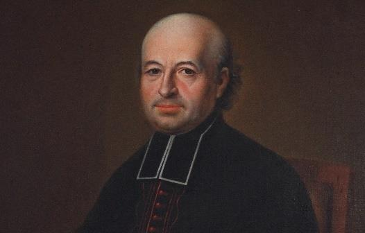

La vision étonnante d’un futur bienheureux

Décembre 22, 2012, Michel Remaud
La vision du Peuple juif du P. Louis-Marie Baudouin est « étonnante à plus d’un titre », fait observer le P. Michel Remaud, F.M.I., qui souligne la conception de l’Eglise et l’amour de la Bible de son fondateur, en route vers la béatification. Il nous le fait mieux connaître dans cette biographie.
Un décret de la Congrégation pour les causes des saints, approuvé par Benoît XVI, a en effet reconnu, le 20 décembre, les vertus héroïques de ce prêtre français, Louis-Marie Baudouin (1765-1835), fondateur des Congrégations des Fils de Marie Immaculée et des Ursulines de Jésus de Chavagnes. Nous l’avons présenté jeudi dernier, à partir de la notice du diocèse de La Rochelle (cf. Zenit du 20 décembre 2012).
Directeur de l’Institut chrétien d’Études juives et de Littérature hébraïque (Institut Albert Decourtray, à Jérusalem), le P. Remaud, est le lauréat 2010 du Prix de l’Amitié Judéo-Chrétienne de France.
Et l’an dernier, il a présenté le fondateur de sa congrégation dans les colonnes de la revue « Sens », de cette même Amitié Judéo-Chrétienne de France (n° 360, juin 2011, pp. 457-477). Nous reproduisons cette présentation avec l’aimable autorisation de l’auteur et du directeur de la publication, Yves Chevalier, à l’occasion de l’approbation du décret romain.
Louis-Marie Baudouin et les Juifs
Louis-Marie Baudouin naquit le 2 août 1765 à Montaigu, dans ce qui était encore le Bas Poitou et qui allait devenir vingt-cinq ans plus tard le département de la Vendée. Il était le huitième et dernier enfant d’une famille modeste, dont le père, après avoir été cultivateur, travaillait comme jardinier au château de Montaigu. Le fils cadet des époux Baudouin, Pierre-Martin, se destinait déjà à l’état clérical; il fut ordonné prêtre probablement en 1774. Ayant perdu son père en 1767 et sa mère en 1780, Louis-Marie rejoignit son frère Pierre-Martin à Chantonnay, où il était vicaire. En 1781, Pierre-Martin fut nommé vicaire à Luçon. Louis-Marie l’y suivit, puis entra l’année suivante au grand séminaire tandis que son frère était nommé curé d’Angles.
Il fut lui-même ordonné prêtre le 19 septembre 1789, non à Luçon, l’évêque du diocèse, Mgr de Mercy, se trouvant à Paris pour les États Généraux, mais à Saint-Malo. C’est à pied qu’il fit la plus grande partie du voyage, en compagnie de deux jeunes capucins qui se rendaient eux aussi à Saint-Malo pour les mêmes raisons.
Son premier ministère dans le diocèse fut de courte durée. Nommé dès son ordination vicaire à Luçon, où son frère aîné avait entre-temps été nommé curé, il refusa, ainsi que Pierre-Martin, de prêter serment à la Constitution civile du clergé, exigé le 12 juillet 1790 par l’Assemblée nationale. Il fut incarcéré, puis assigné à résidence. Quand l’Assemblée législative décida d’expulser du Royaume les prêtres qui refuseraient de prêter le serment, Louis-Marie voulut rester en France pour y exercer le ministère clandestinement, mais son frère était d’un avis contraire et réussit à le convaincre. Avec des centaines de prêtres français, les deux frères Baudouin partirent pour l’Espagne. Après une période itinérante, Pampelune, Saragosse, Valence, Madrid, le groupe des prêtres du diocèse de Luçon fut accueilli à Tolède en 1793.
Pierre-Martin, dont la santé avait été très éprouvée par le voyage, y mourut et y fut enterré en septembre 1796. Louis-Marie y resta encore un an, puis rentra en France, où il débarqua clandestinement aux Sables-d’Olonne dans la nuit du 14 au 15 août 1797. Nous aurons l’occasion de revenir sur l’influence décisive de cette période espagnole sur la suite de la vie du Père Baudouin.
Il était à peine rentré en France que la persécution reprit, et c’est clandestinement qu’il exerça son ministère. Une fois la paix revenue, il fut nommé curé de la Jonchère (desservant en réalité une douzaine de paroisses), puis, en 1801, curé de Chavagnes-en-Paillers. Il y fonda un séminaire et, en 1805, il fut libéré de la charge de curé pour se consacrer à la formation des prêtres. En 1812, il fut nommé vicaire général de la Rochelle (le diocèse de Luçon avait été réuni à celui de la Rochelle en 1801) et supérieur du séminaire. En 1821, il fut nommé vicaire général du diocèse de Luçon nouvellement rétabli et supérieur du séminaire, charge qu’il exerça jusqu’en 1825, avant de se retirer chez son neveu Joseph, curé de la cathédrale. Il revint s’établir en 1828 à Chavagnes, où il mourut le 12 février 1835.
En 1802, il avait fondé une congrégation de religieuses, les Ursulines de Jésus (U.D.J.), vouées à l’enseignement et à l’éducation. L’organisation et le développement de cette congrégation prirent une part importante de son temps et de son énergie jusqu’à sa mort. Il avait fondé aussi une société de prêtres. Ce projet, né dans sa retraite sablaise, avait pris corps à Chavagnes vers 1805. La société fut dissoute par l’évêque, Mgr Paillou, en 1818, et re-fondée en 1841 par les disciples du Père Baudouin sous le nom de Fils de Marie Immaculée (F.M.I.). La maison mère de cette congrégation, désignée par l’appellation usuelle de « Pères de Chavagnes », se trouve à Chavagnes-en-Paillers, comme la maison mère des Ursulines de Jésus [1].
L’amour de la Bible
Un aspect essentiel de la personnalité spirituelle du Père Baudouin était son amour de la Bible, qu’il lisait assidûment dans la Vulgate et diverses traductions [2]. On n’exagère pas en disant qu’il en était imprégné. Il est impossible de recenser toutes les citations scripturaires dans sa correspondance et dans ses autres écrits; certaines citations sont littérales, d’autres sont des réminiscences qui lui viennent naturellement au fil de la plume. Il écrit par exemple dans une de ses lettres: « Les autres livres (…), quoique bons et saints, sont fades lorsqu’on a le gout et l’intelligence des saintes lettres [3] (…) Je voudrais être dans un désert avec la Sainte écriture, y passer le reste de ma vie, je serais dans le paradis terrestre, ici sont tous les arbres agréables à la vue et délicieux au goût. (…) L’homme, dit ce livre, vit de la parole de Dieu (…) Je veux toujours l’avoir avec moi! Je veillerai avec elle, je me promènerai avec elle, je mangerai sur cette table, je dormirai sur ce lit, je veux en mourant rendre le dernier soupir couché sur elle. (…) Satan (…), pour empêcher de lire ce livre, a épouvanté les hommes, en leur persuadant qu’il était comme inintelligible, trop mystérieux, qu’il n’était bon qu’à des docteurs; détrompez-vous, il est fait pour tous. (…) Si une phrase est un peu obscure, il en est cent qui sont claires. On ne mourra pas de soif auprès d’une fontaine qu’on ne peut toute boire. » Ce « goût et [cette] intelligence des saintes lettres », peu communs assurément pour son époque, avaient été nourris lors de son exil espagnol. L’archevêque de Tolède, le cardinal Lorenzana, avait ouvert largement sa bibliothèque aux prêtres exilés, et l’abbé Baudouin s’y était plongé, non seulement dans l’Écriture, mais aussi dans les commentaires des Pères de l’Église. Cette expérience de jeune prêtre à peine ordonné l’a marqué durablement. Une de ses proches confirme d’ailleurs que le Père Baudouin « employa, en particulier, le temps de son exil à se perfectionner dans la science des divines Écritures, des Pères et de la Tradition. »
En 1810, une jeune religieuse de la congrégation qu’il avait fondée, Sœur Sainte-Agnès, enthousiasmée par ses commentaires bibliques occasionnels, réussit à obtenir de lui une explication du Cantique des Cantiques. Ce commentaire prit la forme d’une série de 94 lettres dont l’ensemble se présente comme une explication continue de l’ensemble du livre verset par verset. La rédaction dut s’étaler sur au moins une année [4]. Ces lettres sont signées « Jérôme » et adressées à « Eustoquie ».
Saint Jérôme (IVe-Ve s.) avait consacré une grande partie de sa vie au commentaire de l’Écriture et à l’élaboration d’une traduction de la Bible en latin, la Vulgate. Eustoquie, ou Eustochium, était une fille de Paula, sa fidèle disciple, et disciple elle-même de Jérôme. Le choix de ces pseudonymes, pour lui- même et pour sa correspondante, montre tout à la fois son amour de la Bible et celui de la tradition patristique, dont il s’est nourri pendant ses années de Tolède.
Après avoir annoncé qu’il va interpréter le livre en l’appliquant à « l’âme religieuse »et à l’Église, il se concentre très vite sur l’Église, « parce que l’âme religieuse se trouve dans l’Église, mais l’Église entière ne se trouve pas dans l’âme religieuse »(17) [5]. C’est l’occasion pour lui d’exposer sa conception de l’Église et d’exprimer sa vision du Peuple juif, étonnante à plus d’un titre.
Les trois périodes de l’histoire de l’Église
Du judaïsme, il semble tout ignorer; ce qui n’a rien de surprenant, puisqu’il est né et a passé la plus grande partie de sa vie dans une région où n’existait plus aucune communauté juive. Lorsqu’il en parle, c’est en répétant les lieux communs qui avaient cours de son temps, et le tableau qu’il en donne n’est pas flatté: « Ils m’ont ôté mon manteau. » (5,6)[6] Le manteau de la Synagogue est, je crois, la lettre de la loi: les docteurs ont même ôté le manteau, ils ont corrompu la lettre des Saints Livres. Ils ont amalgamé un talmud et une gémare, ce sont deux livres composés depuis la prise de Jérusalem ou la dispersion des Juifs, fort obscurs et remplis de faussetés; ces écrits ont épaissi le voile de l’incrédulité opiniâtre des Juifs.(48)
Ou encore: leur Talmud et leur Gémare composés par des rabbins et farcis de mille fables et superstitions sont de mauvais yeux. (61)
Ce qu’il appelle la « gémare » est évidemment la guemara, le commentaire de la Mishna, qui constitue à elle seule la plus grande partie du Talmud. En parlant du Talmud et de la « gémare » comme de deux livres distincts, il montre qu’il n’a aucune connaissance de ce qu’est réellement la tradition juive. À n’en pas douter, il aurait été joyeusement surpris d’apprendre qu’il s’était nourri sans le savoir des commentaires juifs de l’Écriture par l’intermédiaire des Pères de l’Église, qui les avaient largement empruntés tout en les christianisant.
Il y a donc chez lui une distinction totale entre le judaïsme, qu’il ne connaît pas, et le Peuple juif, pour lequel il professe la plus haute estime. Autant il déprécie la tradition d’Israël, à travers l’image qu’il s’en fait et qui n’a rien d’original, autant il aime les Juifs, qui sont pour lui « mes frères aimés et chéris » (19), « le Peuple chéri de Dieu » (29), ou « mes chères tribus » [7].
Avant de revenir plus loin sur ce paradoxe, il faut parler sans plus tarder de ce qui constitue l’originalité de Louis-Marie Baudouin dans sa relation au Peuple juif. Ignorant du judaïsme et imprégné de la Bible, c’est de l’Écriture qu’il tire ses intuitions et ses convictions sur la place du Peuple juif dans l’histoire du salut et, plus précisément, de l’Épître de saint Paul aux Romains et du livre de la Genèse.
On vient de parler d’« histoire du salut ». Tout son enseignement sur le Peuple juif est construit en effet selon une perspective historique. Il l’exprime et le résume dans un des premiers « numéros » de son explication: Il me semble, vierge Eustoquie, qu’il faut considérer l’Épouse de Jésus, c’est-à-dire la Sainte Église, sous trois points de vue:
1°. La primitive Église de la Judée composée de la très pure Marie, mère de Jésus, des apôtres, disciples, saintes femmes et tous ces braves Juifs qui embrassèrent le christianisme après la Pentecôte, surtout ce que l’on appelait l’Église de Jérusalem où il n’y avait qu’un cœur et qu’une âme dans tous les fidèles [8].
2°. L’Église des gentils ou païens, c’est-à-dire ceux qui n’étaient pas Juifs, se sont convertis au christianisme depuis la Pentecôte jusqu’à nos jours; Corneille en est le premier[9].
3°. L’Église de la fin des siècles avant le dernier avènement de Jésus. Cette Société sera composée plus de Juifs que des autres nations. Les membres de cette dernière partie seront comme plus beaux et plus ornés que les autres antérieurs, ils seront ornés de pourpre, c’est-à-dire du martyre. Benjamin reçut cinq portions et ses frères une; le soleil semble être plus beau à son couchant.(18)
Ces trois « points de vue » sont en réalité trois périodes successives de l’histoire de l’Église. On remarquera que, pour le Père Baudouin, la perfection de la « primitive Église de la Judée »va de pair avec son caractère exclusivement juif. En revanche, il ne dit rien des caractéristiques de l’Église contemporaine, celle « des gentils ou païens », dont on verra plus loin qu’il porte sur elle un jugement beaucoup plus nuancé. Quant à l’Église des derniers temps, elle sera bien plus qu’une résurgence de l’Église primitive, et sa beauté sera directement dépendante de son caractère principalement juif. Benjamin, le dernier-né des fils de Jacob, qui avait reçu cinq portions quand chacun de ses frères n’en recevait qu’une lorsque Joseph les reçut à sa table [10], figure ici les Juifs qui tiendront la première place dans l’Église des derniers temps. On trouve déjà dans ce passage les idées principales qui seront développées dans la suite du commentaire.
Cette approche essentiellement historique de la vocation du Peuple juif est sans aucun doute inspirée des chapitres 9 à 11 de l’Épître aux Romains, que notre auteur a lus et relus, et dont on trouve de nombreuses réminiscences dans son commentaire [11]. Une telle lecture de ces chapitres n’est pas commune à son époque. Un théologien contemporain, Georges Cottier, O.P.[12], a écrit à ce sujet: « Il est intéressant de noter que ce n’est peut-être que de nos jours que ces chapitres ont été appréciés à leur juste valeur. De l’époque des Pères de l’Église à des temps plus récents, l’interprétation donnée en minimisait l’importance; ils étaient lus le plus souvent en fonction des questions théologiques sur la prédestination et le libre-arbitre. Aujourd’hui on leur restitue toutes leurs dimensions par rapport au mystère d’Israël et de l’Église. [13] » Sur ce point comme sur beaucoup d’autres, le P. Baudouin apparaît donc comme un précurseur.
C’est encore de l’Épître aux Romains que proviennent, de toute évidence, deux commentaires sur des points particulièrement importants:
« Appréciez la lumière divine, Eustoquie, appréciez la grâce que vous n’avez point cherchée, le Messie ou christianisme, vous êtes née dans son sein, le baptême vous a fait, engendrée fille de l’Église, fille de Dieu, sœur du Messie avant de le savoir. « Vous ne M’avez pas choisi » dit notre bon Seigneur. Les Juifs cherchent et ne trouvent point, je n’ai point cherché et je suis chrétien! »(19) Réflexion qui n’est rien d’autre qu’une traduction, dans le style très personnel de notre auteur, des versets 30 et 31 du chapitre 9 de l’Épître aux Romains: « Que conclure? Que des Païens qui ne poursuivaient pas de justice ont atteint une justice, la justice de la foi, tandis qu’Israël qui poursuivait une loi de justice, n’a pas atteint la Loi. » Cette opposition entre les Païens, qui ont trouvé sans avoir cherché, et les Juifs, qui ont cherché sans trouver, est un des points essentiels de l’argumentation de Paul sur le sujet. Louis-Marie Baudouin a parfaitement saisi le point de vue de l’Apôtre lorsqu’il écrit, à propos de l’accueil des Juifs par les Gentils à la fin des temps: « Nous les consolerons en leur disant que leur retardement a été la cause de la conversion des Gentils et que leur retour doit encore leur être plus avantageux; leur charité ardente admettra cette consolation. » (57)
Que la situation présente des Juifs en dehors de la foi chrétienne soit cause du salut des Païens est en effet une des affirmations les plus fortes du chapitre 11 de l’Épître aux Romains, que Paul énonce sous différentes formes à cinq reprises en quelques versets [14]. Il est remarquable que Louis-Marie Baudouin l’ait relevé, alors que l’exégèse de son temps, semble-t-il, n’y était guère attentive. Le soulignement des mots manifeste l’importance qu’il attachait à cette relation de cause à effet entre la situation d’Israël par rapport à l’Évangile et la conversion des Païens. Soucieux, comme nous le verrons plus loin, de trouver une signification à ce que Paul appelle l’« endurcissement » des Juifs, et dans lequel la théologie traditionnelle n’a vu généralement qu’un motif de condamnation, il n’est pas surprenant qu’il ait remarqué ces affirmations pauliniennes sur le caractère salvifique de ce que l’on appelle, faute d’un meilleur terme, l’incrédulité des Juifs.
La référence à l’Épître aux Romains est explicite dans ce commentaire sur la métaphore de l’Olivier [15]: « L’apôtre Saint Paul, vierge Eustoquie, dit que les Gentils qui sont des rejetons sauvages sont entés contre nature sur l’Olivier franc, mais il ajoute que ce rejeton sauvage sera coupé et que le franc sera mis à sa place dans son arbre naturel: les chrétiens gentils seront donc rejetés et les Juifs convertis deviendront chrétiens; mais quelques Chrétiens anciens qui n’auront pas fléchi le genou devant Baal (Rm 11,4, cf. 1R 19,18), des Gentils païens qui se convertiront, seront comme les compagnes de ce beau mariage que Jésus fera avec Son ancien Peuple. »(75)
En réalité, notre auteur prend quelques libertés avec le texte auquel il fait allusion. Paul ne dit pas que les greffons (les Païens entés sur l’olivier d’Israël) seront « rejetés », mais qu’ils pourraient l’être s’ils sont infidèles. De ce qui était une mise en garde, le Père Baudouin fait une prédiction. De même, Paul ne dit pas que les « branches coupées » seront regreffées sur leur propre tronc, mais qu’elles pourront l’être « si [elles] ne demeurent pas dans l’infidélité ». Cette lecture s’accorde avec sa perspective générale sur la vocation d’Israël: dans les derniers temps, l’Église sera composée principalement de Juifs, et les Gentils qui en feront partie seront ceux qui auront survécu à l’apostasie générale, dont nous allons bientôt parler. En désignant ces « quelques chrétiens anciens » comme ceux « qui n’auront pas fléchi le genou devant Baal », il leur applique ce que Paul, dans ce contexte, dit des Juifs restés fidèles au temps d’Élie et de ceux qui, de son temps, ont accepté l’Évangile.
Cette lecture s’accorde aussi avec son pessimisme sur la persévérance des Gentils. Ce n’est pas dans l’Épître aux Romains, mais dans d’autres passages du Nouveau testament, qu’il a lu l’annonce d’une grande défection à la fin des temps [16]. Non sans tristesse, il constate que l’Église, à laquelle il est profondément attaché, est composée en grande partie de païens dont la conversion n’est que superficielle:
« Les différents peuples qui ont composé l’Église, comme les Grecs, les Romains et les Barbares, y ont apporté une variété merveilleuse. La science des Grecs, le courage et la politesse romaine, la docilité et la simplicité des barbares ont formé un beau concert, mais combien de taches dans chaque peuple que le baptême n’efface pas! Que d’inconstance! Les prosélytes et les néophytes qu’on a eus chaque siècle, n’y trouvaient plus l’Église comme dans les premiers siècles! La paix et les guerres, les hérésies ont noirci un peu cette Épouse trop féconde. L’ignorance et la trivialité ont quelquefois préféré une fécondité ignoble 17] à la beauté noble et majestueuse, on n’y regardait pas de près pour avoir des enfants; on a souvent abandonné pour cela la prudente discipline des siècles plus fermes.
(…) L’Église, jusque-là, chère Eustoquie, a été composée de fidèles de diverses nations, par conséquent de divers intérêts et caractères et passions. Des intérêts temporels, des points d’honneur particuliers ont divisé des royaumes chrétiens contre des royaumes chrétiens. C’est pourquoi nous avons vu depuis la destruction de l’empire romain, chaque siècle, des guerres continuelles entre chrétiens et chrétiens. C’est pourquoi nous sommes devenus si pauvres, si faibles: « une maison divisée contre elle-même ne subsistera pas! [18]» (60)
Il attend donc pour la fin des temps le renfort des Juifs pour rendre l’Église à son idéal et à sa vocation:
« Mais l’unité des Israélites convertis, cette charité unanime, cette même manière de penser, cet amour d’une même nation les rendra forts, comme une armée bien unie, comme une colonne impénétrable. Ces douze mille de chaque tribu [19]seront tous les enfants d’un même Père. Un triple cordon ne peut se rompre, que sera-ce donc?… Nous avons besoin de ce renfort, vierge Eustoquie, nos colonnes sont divisées et éparses çà et là, nous fuyons et nos ennemis nous poursuivent de près et égorgent les fuyards. Pressez-vous, belle armée, venez, volez à nous, nous périssons. » (ibid.)[20]
Tout cela dessine un ensemble cohérent. La deuxième période de l’histoire de l’Église, « des Gentils ou Païens », ne peut être son état final. Pour redevenir elle-même, l’Église doit renouer avec ses origines juives. Si Louis-Marie Baudouin cite ses sources avec une certaine liberté et si le tableau qu’il brosse porte sa touche très personnelle, son commentaire est nourri d’une lecture assidue de l’ensemble de l’Écriture. Il attend ardemment la Parousie, la Venue en gloire de Jésus. Et s’il utilise dans ce contexte le terme de « conversion » des Juifs, qui sonne si désagréablement aux oreilles juives, ce mot, dans son esprit et sous sa plume, désigne tout autre chose qu’une assimilation d’individus juifs qui devraient perdre leur identité au sein d’une Église composée massivement de Païens. La conversion, pour lui, n’a rien d’une capitulation théologique des Juifs devant l’Église. Il dit d’ailleurs très clairement que les chrétiens ne doivent pas essayer de convaincre les Juifs d’adhérer à l’Évangile. C’est Jésus Lui-même qui s’en chargera, quand Il le voudra:
« Laissez faire le riche et puissant Epoux, Il aime Rache l[21], cela suffit. L’Époux Lui-même lui parlera au cœur, vous lui parlez depuis dix-huit cents ans, et elle est toujours stérile et petite: l’Époux n’a pas parlé, Il lui parlera, elle aura la parole de l’Époux. »(90)
Et, plus explicite encore:
« J’entrevois, chère Eustoquie, que l’aimable Rachel ou les Juifs des derniers temps viendront à Jésus, poussés et éclairés immédiatement par les grâces de ce Messie désiré et non par les instructions des docteurs de notre Église. Benjamin fut bien amené à Joseph par ses frères, mais Joseph les avait forcés. Lors donc que les Israélites se réuniront à nous, ils sauront déjà que Jésus est le vrai Messie. »(58)
Il attend la reconnaissance directe de Jésus par Israël, et les Païens qui participeront à ces retrouvailles comprendront qu’ils sont associés par pure grâce à une Alliance qui reste, d’abord, une Alliance entre Dieu et Son Peuple de toujours. On retrouve ainsi les grandes perspectives des Épîtres aux Romains et aux Éphésiens sur l’extension aux païens de l’Alliance avec Israël [22].
Enfin, ces perspectives eschatologiques incluent le retour des Juifs sur la terre d’Israël:
« Je vous prendrai, je vous mènerai dans la maison de ma mère; là, vous m’instruirez… » (8,2) Il paraît clair qu’ils ne sont pas dans la maison de leur mère, puisqu’ils conduisent le Bien-Aimé. Je crois donc, Eustoquie, d’après ces paroles prophétiques, que les Juifs retourneront habiter la Judée, cette terre qui fut le théâtre de nos saints mystères, le berceau du Christianisme sera encore témoin des dernières merveilles: le soleil de miséricorde y luira encore, le lait et le miel y couleront encore avec abondance. (…) Jérusalem, tes routes seront encore fréquentées.
« Là vous m’instruirez » : les lieux mêmes sont instruisants, mais en outre, Eustoquie, Elie paraîtra en Judée, c’est de cette terre où il réconciliera le cœur des enfants avec leur Père, ce glorieux prophète agira encore par son double esprit de miracle. »(81)
Ici encore, Louis-Marie Baudouin fait preuve d’originalité. Certes, le livre du dernier prophète biblique, Malachie, se termine par l’annonce de la venue d’Élie, qui « ramènera le cœur des pères vers les fils et le cœur des fils vers leurs pères », et dont la mission précédera « le Jour du Seigneur, grand et redoutable »[23]. Cette attente d’Élie tient une grande place dans le judaïsme, mais rien ne permet de penser que le Père Baudouin l’ait su. En revanche, le fait que le Nouveau Testament identifie Jean- Baptiste à Élie [24] a conduit les chrétiens à considérer cette prophétie comme déjà accomplie, plutôt que d’en faire le support d’une espérance. Quant au retour des Juifs sur la terre d’Israël, c’est une perspective qui est assez largement étrangère à la Tradition patristique. Saint Jérôme, pour ne citer que lui, puisque le Père Baudouin s’était placé sous son patronage, écrit par exemple « la désolation des Juifs durera jusqu’à la fin du monde [25] ». On ne saurait trop souligner la liberté dont fait preuve notre auteur, liberté qui est évidemment nourrie par sa familiarité avec l’Écriture. Remarquable aussi est la manière dont il passe d’un livre à l’autre (ici, du Cantique à Malachie) selon une méthode qui vient tout droit du judaïsme (ce qu’il ignorait) à travers la tradition patristique, et qui suppose une fréquentation assidue de la Bible dans son ensemble.
Allégories bibliques
« Il aime Rachel »: cette formule nous amène à présenter l’allégorie à travers laquelle Louis-Marie Baudouin exprime de la manière la plus originale sa conception des rapports de Jésus, d’Israël et de l’Église.
Le livre de la Genèse raconte comment Jacob, amoureux de Rachel, avait dû travailler pendant sept ans avant que Laban, son futur beau-père, ne la lui accorde en mariage. Mais le soir de ses noces, Laban avait substitué à Rachel sa sœur aînée Léa, obligeant Jacob à travailler sept années supplémentaires pour obtenir Rachel [26]. Pour Louis-Marie Baudouin, Jacob est la figure de Jésus. Rachel, qui a été aimée la première et qui sera épousée la dernière, celle qu’il appelle le plus souvent « la belle Rachel», est la Synagogue. Léa est l’Église des nations. Cette allégorie s’accorde parfaitement au schéma selon lequel il présente les trois périodes de l’histoire de l’Église: Rachel — le Peuple juif qui n’a pas reconnu Jésus lors de sa première venue — demeure le premier amour. Le temps dans lequel nous sommes est celui de Léa, c’est-à-dire des Gentils, mais la reconnaissance de Jésus par les Juifs permettra les épousailles de Jacob avec Rachel. Dans le lyrisme avec lequel il parle de « la belle Rachel », il est difficile de dissocier l’amour de Jésus pour Son Peuple et son propre amour pour le Peuple juif, qu’il appelle, d’une formule peu commune sous la plume d’un chrétien, « la plus belle d’entre les femmes ».Sans aucun doute, Rachel reste la préférée. Après avoir déploré la « fécondité ignoble » de l’Église des nations [27], il enchaîne:
« Consolez-vous cependant, Eustoquie, cette variété de couleurs a néanmoins déjoué l’avarice du trompeur Laban et enrichi le prudent Jacob[28]. Mais la beauté de la Rachel des derniers temps sera d’une autre beauté. » (60) Sur le verset « Mon Bien-Aimé est descendu dans son jardin » (6,1), le Père Baudouin a ce commentaire étonnant:
« Ce mot descendu exprime parfaitement la descente du Verbe sur la terre et la prédication de l’Évangile aux Gentils, car les Juifs étaient bien élevés au-dessus des Gentils. Jésus, venant et se communiquant des Juifs aux Gentils, descend. » (58)
Formule qui exprime la haute estime — le mot est trop faible — dans laquelle il tient le Peuple juif. Il est à peine nécessaire de souligner qu’il n’y a aucune place, dans son esprit ni sous sa plume, pour ce que l’on a appelé la « théologie de la substitution ». Comment Léa pourrait-elle remplacer Rachel et la faire oublier?
Une autre allégorie est l’interprétation du personnage de Benjamin. On la trouve dans le commentaire de la scène, déjà évoquée [29], où Joseph invite ses frères à sa table et fait servir à Benjamin cinq portions alors que chacun de ses autres frères n’en reçoit qu’une. Benjamin est ici la figure des Juifs qui constitueront l’Église des derniers temps, ses frères étant l’image des Gentils qui en feront aussi partie. On remarquera que pour lui, cette Église des derniers temps, dont la beauté surpassera celle de l’Église d’aujourd’hui, sera ornée de la pourpre du martyre. C’est dire que la tribulation ne lui sera pas épargnée. Ce combat eschatologique, les Chrétiens venus de la gentilité ne pourront le soutenir sans le renfort des Juifs. Il nous faut revenir sur un texte déjà cité:
« Nous avons besoin de ce renfort, Vierge Eustoquie, nos colonnes sont divisées et éparses çà et là, nous fuyons et nos ennemis nous poursuivent de près et égorgent les fuyards. Pressez-vous, belle armée, venez, volez à nous, nous périssons. »(60)
Ces images de combat viennent naturellement sous la plume de quelqu’un qui a connu la persécution et la clandestinité. Pendant son exil espagnol, une partie de la population de sa future paroisse de Chavagnes avait été exterminée par les « colonnes infernales » [30]. Son frère François-Hilaire, de quatre ans son aîné, avait été fusillé en 1794, lui-même aspirait au martyre, il n’aurait pas quitté le pays au moment de l’épreuve si son frère Pierre-Martin ne l’en avait persuadé, et il avait dû consacrer ses énergies, à son retour de Tolède, à la reconstruction d’une Église dévastée.
Situation des Juifs d’aujourd’hui
Le moment est venu d’aborder la question inévitable: ignorant de la réalité du judaïsme, comment Louis-Marie Baudouin a-t-il pu concilier l’image qu’il s’en faisait avec son amour du Peuple juif? Comment peut-il écrire à la fois: « Les Juifs ont commis mille horreurs pendant dix-huit siècles. » [31] (92) et « Vous voyez, Vierge Eustoquie, comme j’aime les Juifs. »? La réponse est aussi riche que complexe.
Il faut d’abord souligner que pour lui, les Juifs d’aujourd’hui appartiennent au même Peuple que la première Église de Jérusalem, « la très pure Marie, mère de Jésus, des apôtres, disciples, saintes femmes et tous ces braves Juifs qui embrassèrent le christianisme après la Pentecôte. » Il n’y a chez lui aucune idée d’un rejet dont serait victime la partie d’Israël qui n’a pas accepté l’Évangile. Il y a un seul Peuple juif, dont tous les membres, qu’ils adhèrent ou non à l’Évangile, constituent un seul corps [32]. Il le dit très clairement dans son commentaire sur le verset: « Je dors, mais mon cœur veille. » (5,2):
« L’Épouse est un corps composé de plusieurs membres vivants. Le cœur qui veille, ce sont des membres différents de ceux qui dorment. (…) Je crois donc que l’Épouse qui parle dans ce verset est la Synagogue que notre Maître a voulu épouser, mais qui n’a pas encore donné son consentement. Aussi, Il l’appelle bien sa Sœur, etc, mais le mot Épouse n’y est pas. La Synagogue dormait au passage de l’Époux, elle ne l’entend qu’en songe, à la vérité, son cœur veille. (…) Ce cœur, qui veille, sont les Juifs aimant Jésus, qui écoutaient et croyaient sa douce et divine parole. C’est Marie, mère de Dieu! Elle seule suffirait pour faire le cœur. C’est Joseph, c’est Jean-Baptiste, c’est Elisabeth, nos saints Apôtres, les disciples, sainte Madeleine et les saintes Femmes, etc… »(45)
Quant à la partie d’Israël qui n’a pas accueilli Jésus, elle a été abusée par les docteurs de la Loi, ceux-là même qui ont compilé le talmud et la « gémare »:
« Les prêtres, les rabbins ou les docteurs de la loi mosaïque, ce sont ceux qui rôdent pour garder les traditions et les observations légales; ils ont souvent persécuté ceux qui voulaient embrasser le christianisme, ils flagellèrent et frappèrent les premiers disciples, ils intimidèrent les autres. »(48)
Cette charge sur les chefs du Peuple est une manière de disculper le Peuple lui-même, qu’il se refuse de vouer à la condamnation.
Elle n’a pour nous d’autre intérêt que de nous montrer ce qu’il a lu et entendu, qu’il accepte comme une donnée objective, faute de disposer d’une connaissance directe du judaïsme, et avec quoi il doit composer [33]. Plus que cette présentation caricaturale du judaïsme, on retiendra sa volonté de trouver des excuses à Israël. Particulièrement digne d’intérêt est l’application à la Loi mosaïque de l’image de la myrrhe, à propos du verset « Mes mains étaient toutes dégoûtantes de myrrhe » (5,4):
« Les Juifs ont été comme ensevelis avec le Sauveur, Lui dans le tombeau, eux dans les ombres de la Loi. Cette Loi est bien figurée par la myrrhe, parce que la Loi de Moïse était pure, mais cette pureté ensevelissait des cadavres ou des morts, puisqu’ils ont été dans cet état de mort jusqu’aujourd’hui, cependant ils ne se sont pas corrompus d’une manière matérielle, car, par un miracle persévérant, les Juifs ont existé depuis Jésus-Christ Notre-Seigneur, tandis que les autres peuples ont disparu. En outre, ils n’ont fait aucune alliance avec une autre religion. (…) Ces Juifs qui se convertiront au Messie à la fin des temps verront alors la vraie pureté de l’ancienne Loi, ils la verront accomplie dans toutes ses figures et ses prophéties, ils seront par-là plus instruits que les Chrétiens d’aujourd’hui. Ils entendront les rapports qu’il y a entre Moïse et Jésus. Les Chrétiens de nos jours distinguent et savent à peine l’ancienne Loi; ils la regardent comme mauvaise[34]; un Juif pour eux est un objet d’horreur, ce qui les regarde paraît comme ridicule et même infâme. »(47)
Cette image de la myrrhe revient très fréquemment dans le commentaire du Cantique. Elle n’a jamais rien de dépréciatif et elle est toujours associée aux idées de pureté, d’incorruptibilité ou de fidélité, que ce soit la chasteté des vierges ou l’infaillibilité du magistère.
Relevons aussi la phrase: « Ils entendront les rapports qu’il y a entre Moïse et Jésus. »La connaturalité des Juifs avec l’Écriture leur fera découvrir entre les deux Testaments des harmonies qui échappent aux Chrétiens venus de la gentilité. Une idée qui était tout sauf classique à une époque où les Chrétiens, pour reprendre les formules de notre auteur, distinguaient et savaient à peine l’ancienne Loi, allant même jusqu’à la regarder comme mauvaise.
Plutôt que de s’arrêter sur les images méprisantes du judaïsme, qui le mettent manifestement dans l’embarras, il voit dans la pérennité du Peuple juif la fidélité à sa propre identité, fidélité qui devrait, par comparaison, faire rougir les Chrétiens. La manière dont il fait passer ses intuitions et convictions personnelles avant les lieux communs de l’antisémitisme vulgaire ne laisse pas d’impressionner. Il faut le citer encore un peu longuement, pour bien montrer sur quoi porte l’accent de son commentaire sur ce sujet délicat, autant que pour mettre à la portée du lecteur des textes aussi originaux qu’inconnus:
« Si les Juifs, vierge Eustoquie, ont méconnu Jésus pour le Messie, cependant n’ont-ils pas rejeté le Messie comme le Messie. S’ils L’eussent connu comme le Seigneur de la gloire, ils ne L’eussent point crucifié[35](…) Les Juifs cherchent et attendent le Messie depuis dix-huit siècles, surtout s’ils n’aimaient pas le Messie, ils eussent changé de religion; ils ont toujours persévéré dans leur culte. Les Chrétiens ont varié plus qu’eux, il y a eu plus d’apostasie, d’hérésie parmi nous, cependant nous avions plus de grâces. Leur fidélité doit nous faire honte. Cieux, rougissez sur ce monstre! Un enfant d’Abraham estime encore la circoncision, un enfant de Jésus-Christ déprécie le baptême! Je parle contre moi, mais il est temps, Seigneur, chassez Agar et Ismaël, qu’ils se contentent d’une cruche d’eau et que Sara soit féconde[36]. » (49)
« …ils n’ont pas voulu se donner à un autre; ils ont toujours attendu le Messie. Autrefois, ils adoptaient toujours des dieux étrangers, mais depuis dix-huit siècles, ils attendent le Messie! Errants et vagabonds dans toutes les contrées, parmi les idolâtres, les mahométans, les hérétiques, ils n’ont épousé aucune religion. La tentation était grande, Eustoquie, point de Temple, point de sacrifice, il était défendu de sacrifier autre part qu’à Jérusalem; les autres peuples sacrifiaient. Ils ont été d’une constance inébranlable: l’opprobre, la pauvreté, l’infamie sont tombés partout sur ce Peuple, il n’a pas abandonné la Loi de Moïse.
Il est vrai qu’ils ont marché dans les ténèbres (…) mais leur illusion est d’attendre le Messie! D’aimer le Messie! » (59)
On remarquera le paradoxe: depuis la destruction du Temple, Israël est plus fidèle qu’il ne l’avait jamais été aux temps bibliques [37]! Faut-il souligner l’originalité d’un tel propos, qui contraste du tout au tout avec ce qu’affirmait l’enseignement chrétien le plus autorisé? Que l’on pense, entre de multiples exemples possibles, à ce que disait Bossuet sur le « peuple monstrueux » des Juifs [38]. Pour Louis- Marie Baudouin, qui fait preuve sur ce point comme sur d’autres d’une totale liberté de pensée, ce que la tradition chrétienne considère comme un endurcissement dans l’incrédulité est en réalité une fidélité dans l’attente du Messie, fidélité tendue vers un avenir et non fermée sur un passé.
« Vous voyez comme j’aime les Juifs »
Cette présentation serait gravement incomplète si l’on ne revenait sur la manière dont Louis-Marie Baudouin exprime son amour du Peuple juif. Cet amour des Juifs est présent dans tout le commentaire. On ne reproduira ici que le passage qui est peut-être le plus caractéristique, dans lequel il montre que toutes les richesses dont l’Église pourrait se prévaloir sont juives:
« Quel est votre Bien-Aimé, ô la plus belle d’entre les femmes! » (5,9)On l’appelle ici la plus belle entre les femmes, c’est par une douceur flatteuse, Eustoquie, qu’on gagne les cœurs, mais une flatterie sans bassesse et sans mensonge. La Société des Juifs est en effet la plus belle des Sociétés, sa noblesse est ancienne, Eustoquie, elle monte à Abraham, ce patriarche distingué en tout genre. Abraham descend de Sem, fils aîné de Noé, c’est le Peuple de Dieu, Il l’a conduit par la main comme un père tendre conduit son enfant chéri: s’il s’écarte il est châtié, mais non détruit. Parcourez tous les peuples, vous ne trouverez pas un seul héros qui approche du dernier du collège nombreux des patriarches et des prophètes: quelle pureté simple d’Isaac; quelle droiture, quelle bonté, quelle patience, quelle fidélité dans Jacob! La prudence, la chasteté de Joseph, la douceur, l’immense charité, la patience longanime de Moïse! Le courage de Josué, la force de Samson, l’obéissance de Samuel, le bon cœur de David, la sagesse de Salomon, Josias, Ezéchias, Elie, Isaïe, Jérémie, Zorobabel, Esdras, les Machabées! Quelle beauté dans leurs lois, leurs écrits, leur morale, quelle vérité et pureté dans leur doctrine! Trouvez des femmes comme Déborah, Judith, Esther! (…) Si on lui reproche des crimes, il a des vertus sans nombre, la police la plus prudente, les écrits les plus savants; ce Peuple buvait à longs traits les eaux limpides de la Vérité, tandis que les Grecs rusés, les Romains courageux n’en suçaient que quelques gouttes, encore n’étaient-elles pas pures. O Eustoquie, que les tentes de Jacob sont belles! Vous dites, Eustoquie, mais la Société chrétienne? Bien, mais, Eustoquie bien aimée, nous perdons encore la victoire. La beauté et la richesse de notre Société est chez ce Peuple: Jésus, Marie, Joseph, les Apôtres, etc… étaient Juifs; nos Écritures et de l’Ancien et du Nouveau Testament viennent des Juifs, nos sacrements viennent des Juifs, la destruction de l’idolâtrie et notre conversion a été opérée par le ministère des Juifs. O la plus belle d’entre les femmes!… Qui méprisera ce Peuple, chère Eustoquie? Pour moi, je l’aime ardemment et voudrais lui rendre ce qu’il m’a donné avec tant de libéralité.
Venez, ô Juifs, nous sommes vos amis, ou plutôt vos enfants. Vous êtes la Racine, nous sommes vos rameaux, venez, nous vous verrons, nous vous aimerons. »(49)
Surgit ici la question: la simple lecture de la Bible aurait-elle suffi à lui communiquer un tel amour des Juifs alors qu’il n’a jamais fréquenté la communauté juive? Une hypothèse récente peut apporter un élément de réponse à cette question qui reste en partie énigmatique. À Tolède, il a dû travailler de ses mains dans la passementerie, un métier où il a fréquenté les marranes, ces descendants des Juifs espagnols convertis de force par l’Inquisition. C’est dans le quartier marrane qu’est inhumé son frère Pierre-Martin. Peut-être cette rencontre lui a-t-elle ouvert les yeux sur le mystère de ce Peuple qui a survécu à toutes les épreuves de l’histoire et dont la survie est humainement inexplicable, comme il l’écrit lui-même.
Si cette hypothèse pouvait se vérifier, on devrait en conclure que c’est la conjonction de la lecture de la Parole de Dieu et de la rencontre des fils de ce Peuple qui pourrait expliquer ces intuitions, aussi prophétiques qu’originales, mais aussi et surtout son amour pour un Peuple juif qui, loin d’appartenir au passé, attend encore l’accomplissement des promesses.
Actualité de Louis-Marie Baudouin
Quel intérêt présente aujourd’hui l’enseignement de Louis-Marie Baudouin sur les Juifs — si tant est que le terme d’enseignement soit le plus adéquat pour désigner des intuitions qu’il confiait plutôt comme un secret?
Nous ne nous arrêterons pas sur son style. Certains y verront un obstacle, d’autres ne seront pas gênés par son langage ni par son expression. On pourra même apprécier le lyrisme et le souffle de certains passages.
Son ignorance du judaïsme, déjà signalée, vaut qu’on s’y étende davantage. Il est évident qu’il se serait exprimé autrement s’il avait pu se faire une idée personnelle de l’esprit du Talmud, s’il avait eu connaissance des textes de la prière synagogale et, surtout, s’il avait eu contact avec les méthodes et les thèmes de l’interprétation juive de l’Écriture. Nous avons vu comment il passe outre à ce qu’il a lu et entendu sur les turpitudes attribuées aux Juifs, qu’il ne met pas en question, pour laisser s’exprimer ses intuitions les plus personnelles sur la vocation d’Israël.
Cela dit, il n’est pas certain que son approche aurait été totalement bouleversée s’il avait eu une connaissance de première main de la tradition juive. Sans disposer d’autres références que celles de l’Ancien et du Nouveau Testaments, il s’en est tenu aux lignes de force d’une théologie biblique de l’Alliance. On peut penser qu’il aurait été libéré de faux problèmes et que ses convictions n’auraient été que renforcées par une connaissance directe des sources juives; même si une telle connaissance l’eût amené, sans doute, à modifier quelque peu son approche.
À plus d’un titre, ses réflexions peuvent constituer aujourd’hui un apport original et riche dans la relation de l’Église au Peuple juif.
Le plus important est probablement son amour même des Juifs, chaleureux et sans réserve. De nos jours, les condamnations de principe de l’antisémitisme vont souvent de pair avec les formes anciennes et modernes de condamnation des Juifs. Que des chrétiens, vingt siècles après la prédication de l’Évangile, puissent encore professer le mépris, l’arrogance, l’ironie ou même la haine à l’endroit du Peuple juif, alors que la mission de Jésus était de rassembler Israël et les nations, est un mystère autant qu’un scandale. Le Père Baudouin a osé écrire, en toute simplicité: « J’aime les juifs. » Non à cause de leurs qualités ou malgré leurs défauts, mais à cause de la place qu’ils occupent dans le dessein de Dieu. Son amour ne procède pas du sentiment ou des impressions, mais de la Révélation.
Cet amour des Juifs est chez lui indissociable de l’amour de la Bible, enraciné dans le Nouveau Testament et dans la Tradition patristique. Sa lecture est essentiellement une fréquentation assidue de l’Écriture dans sa totalité, assurant le passage permanent de l’un à l’autre Testament; lecture que les différentes formes de l’exégèse moderne, pour indispensables qu’elles soient, ne peuvent remplacer. Il écrit dans sa première lettre à Sœur Sainte-Agnès: « Les saintes Ecritures s’expliquent par les saintes Ecritures. » La formule pourrait être aussi juive que patristique.
Faudrait-il en conclure que la lecture assidue de l’Écriture serait le meilleur antidote à l’antisémitisme? On aimerait pouvoir répondre par l’affirmative, mais la réalité est moins simple. Les Pères de l’Église connaissaient admirablement l’Écriture; pourtant, leur relation aux Juifs était généralement polémique. Sous leur plume, l’Écriture apparaît comme un arsenal de preuves et d’arguments destinés à convaincre les Juifs de leur erreur.
Rien de tel chez Louis-Marie Baudouin, dont on a vu comment son amour des Juifs va de pair avec l’exclusion de toute activité missionnaire pour tenter de les « convertir ». Une fois de plus, il est libre par rapport à ses maîtres, et l’on pourra toujours se demander quelle est l’origine de cette liberté. Certes, on pourrait dire qu’il tire les leçons de l’histoire. Les Pères de l’Église, bien évidemment, n’auraient pas pu tenir les propos que lui-même adresse à « Léa » pour la dissuader de chercher à convaincre Rachel: « Vous lui parlez depuis dix-huit cents ans. »Mais dans ce refus de chercher à convaincre les Juifs, il y a bien autre chose qu’un constat réaliste de l’inutilité d’une telle entreprise. Lui qui aimait rappeler que Dieu prend son temps et qui recommandait de ne pas « enjamber »sur la Providence, il a vu, dans ce « sommeil »de Rachel, un élément du plan de Dieu plus qu’une obstination des Juifs dans l’erreur. « Laissez faire le riche et puissant Epoux, Il aime Rachel, cela suffit. L’Époux Lui-même lui parlera au cœur, vous lui parlez depuis dix-huit cents ans (…): l’Époux n’a pas parlé, Il lui parlera, elle aura la parole de l’Époux. »Pourquoi chercher à convaincre par les arguments d’une dialectique humaine alors que « l’Époux n’a pas parlé »? On remarquera la hardiesse de cette dernière formule. Pour Louis-Marie Baudouin, « l’Époux »n’a pas encore parlé à Israël. La prédication aux Juifs dans le Nouveau Testament, de la part de Jésus Lui-même et des apôtres, n’est donc pas le dernier mot de « l’Époux ». Une fois de plus, il nous ramène au chapitre 11 de l’Épître aux Romains: les situations présentes d’Israël et des nations s’inscrivent dans une histoire inachevée, dont l’issue est le secret de Dieu. Le temps et les modalités de cet avenir demeurent inconnus. Sa relation à Israël est étroitement liée à son attente de la venue glorieuse de Jésus. Dans l’intervalle, son « J’aime les juifs »fait écho à « Il aime Rachel, cela suffit ».
Sa description de l’Église des derniers temps, composée plus de Juifs que de Païens, peut surprendre. Du moins met-elle en évidence un point essentiel: si Jésus est bien le Messie d’Israël, la vocation des Juifs n’est pas de renoncer à leur identité pour se dissoudre dans une société composée de Païens, même convertis. Ce sont les Gentils qui, par le Christ, bénéficient de l’extension de l’Alliance avec Israël [39]. La reconnaissance de Jésus par les Juifs sera une rencontre entre Juifs, la reconnaissance de Joseph par ses frères, ou les épousailles de Jacob et de Rachel. Et les Gentils qui seront « comme les compagnes de ce beau mariage », rescapés de l’Apostasie générale des nations — et cette perspective dramatique, on l’a vu, ne manque pas d’appuis dans le Nouveau Testament —, seront passés par une expérience d’humilité qui les aura guéris de toute superbe par rapport aux Juifs. Ce sera l’application de la métaphore paulinienne de l’Olivier: « Ce n’est pas toi qui portes la Racine, c’est la Racine qui te porte.[40]» Formule qui, dans son contexte, est un avertissement adressé aux Païens pour les mettre en garde contre toute tentation d’arrogance vis-à-vis des Juifs.
Lorsqu’il écrit « que leur retardement a été la cause de la conversion des Gentils et que leur retour doit encore leur être plus avantageux », il ne fait que paraphraser le verset de Paul:
« Si leur mise à l’écart a été la réconciliation du monde, que sera leur réintégration, sinon le passage de la mort à la vie?» [41]. Affirmation capitale, dont on s’étonne qu’elle ne soit pas mieux mise en relief aujourd’hui, même par certains acteurs du dialogue judéo-chrétien, chez qui l’estime du judaïsme semble parfois se réduire au respect de la bonne foi et des subjectivités individuelles [42]. Paul ouvrait des perspectives d’une autre ampleur en affirmant que la permanence d’Israël, en tant que Peuple, hors de la foi chrétienne s’inscrit dans un Projet divin ordonné au salut des nations: si les Païens ont accédé au Salut, c’est parce qu’Israël reste extérieur à l’Évangile. Sur ce point, le Père Baudouin, en lecteur attentif de l’Écriture, est plus moderne que certains modernes.
Enfin, il a parfaitement montré que l’Église ne peut se comprendre, dans sa mission et dans son existence même, indépendamment du Peuple juif, puisqu’elle n’existe que par une Alliance qui a été conclue, d’abord et pour toujours, avec Israël. Le dernier Concile introduit sa déclaration sur les Juifs par cette phrase: « Scrutant le mystère de l’Église, ce Concile se souvient du lien qui unit le Peuple du Nouveau Testament avec la Lignée d’Abraham. » La relation au Peuple juif ne relève pas des relations extérieures de l’Église, mais elle est une composante de son être même. Sur ce point, Louis-Marie Baudouin, à sa manière, anticipe d’un siècle et demi Vatican II.
L’explication du Cantique des cantiques était une correspondance privée. Le Père Baudouin n’ignorait pas que ces lettres, adressées à Sœur Sainte-Agnès, étaient lues en communauté. Plus tard, inquiet des interprétations imprudentes qui pouvaient en être faites, il avait cherché à en interdire la diffusion. Les originaux en ont d’ailleurs disparu. Peut-être ont-ils été délibérément détruits, par lui-même ou à sa demande. Heureusement pour nous, ils avaient été soigneusement transcrits par les religieuses! Les copies de ces lettres ont dormi pendant plus d’un siècle et demi dans des archives, ne retenant l’attention que de quelques rares lecteurs, pour n’en ressortir qu’après le dernier concile, sous la forme d’une simple transcription dactylographiée [43]. En 1811, leur diffusion eût été prématurée et même incomprise, alors que certains de ses confrères, ignorant pourtant de ses réflexions sur les Juifs, ironisaient sur les « baudouineries ». Pour des raisons dont la seule Providence est juge, elles viennent au jour au moment où se dessinent, après des siècles d’incompréhensions et de conflits, de laborieuses retrouvailles entre l’Église et Israël.
[1] On peut compléter cette brève notice biographique par la lecture du livre de Maurice Maupilier, F.M.I. Louis-Marie Baudouin et ses disciples, Bar-le-Duc, Saint-Paul, 1973. Les biographies anciennes sont épuisées. Le R.P. A. Duret a publié deux volumes de Lettres du Vénérable Louis-Marie Baudouin, Paris, Gabalda, 1931 et 1934. L’essentiel de la documentation se trouve dans les archives des Ursulines de Jésus et des Fils de Marie Immaculée. L’ouvrage le plus récent est constitué par le dossier présenté pour le procès de béatification Béatification et canonisation du Serviteur de Dieu Louis-Marie Baudouin, prêtre, fondateur des Fils de Marie Immaculée et des Ursulines de Jésus, Rome 1995; biographie et reproduction de nombreux documents, suivie d’une “Synthèse des vertus”, 1 vol., 815 pages (hors commerce). Je remercie Sœur Thérèse-Marguerite Gilbert, U.D.J., qui a bien voulu relire ce manuscrit et y apporter des précisions et compléments historiques.
[2] Les Ursulines conservent son exemplaire de la traduction de Lemaistre de Sacy. C’est peut-être au sujet de cette bible qu’il écrivait à son neveu le 23 décembre 1815: « Cette bible (il ne la nomme pas), n’est pas bonne, elle sent le port royal ou l’orgueilleux et absurde jansénisme. Je te donne permission de la lire, mais ne t’y attaches pas, tâche de te procurer Carière ou Vences, c’est un commentaire complet. Lis beaucoup ce livre, c’est le Livre, oui, le Livre, il n’y en a pas d’autre. »
[3] On respecte dans la transcription l’orthographe et la ponctuation de l’original.
[4] Les originaux de ces lettres n’ont pas été conservés (cf. ci-dessous, conclusion). Seules subsistent des copies faites par les religieuses, et les dates n’y sont généralement pas indiquées. Les dernières lettres semblent avoir été écrites de la Rochelle.
[5] Ces références sont celles des « numéros » (selon l’expression du P. Baudouin lui-même) du commentaire.
[6] Pour la commodité de la lecture, on a introduit ici les références des citations du texte biblique.
[7] Lettre à un prêtre.
[8] Citation libre des Actes des Apôtres, 4,32.
[9] V. Actes des Apôtres, chapitre 10.
[10]Genèse 43,34.
[11] La bibliographie sur ces trois chapitres est immense. On trouvera de nombreuses indications bibliographiques dans F. Refoulé, «…et ainsi tout Israël sera sauvé», Paris, Cerf, 1984; J-N. Aletti, Comment Dieu est-il juste? Paris, Seuil, 1991 et Israël et la Loi dans la lettre aux Romains, Paris, Cerf 1998. Voir également C. Perrot, « La situation religieuse d’Israël selon Paul », dans Procès de Jésus, procès des Juifs?, sous la direction d’Alain Marchadour, Paris, Cerf 1998, pp. 133-151. Je me permets de renvoyer aussi aux chapitres 9 et 10 de mon livre Chrétiens et juifs entre le passé et l’avenir, Bruxelles, Lessius, 2000.
[12] Le R.P. Georges Cottier a été pendant de longues années « théologien de la Maison pontificale », c’est-à-dire conseiller théologique du pape, Jean-Paul II, qui l’a créé cardinal en 2003.
[13] G. M-M Cottier, O.P. « La religion juive », dans Vatican II. Les relations de l’Église avec les religions non chrétiennes, Paris, Éd. Du Cerf, coll. « Unam Sanctam » n° 61, p. 247.
[14] « Grâce à leur faute, les païens ont accédé au salut » (v. 11); « leur faute a fait la richesse du monde, et leur déchéance la richesse des païens » (v. 12); « si leur mise à l’écart a été la réconciliation du monde, que sera leur réintégration, sinon le passage de la mort à la vie? » (v. 15); « par rapport à l’Evangile, les voilà ennemis, et c’est en votre faveur » (v. 28); « par suite de leur désobéissance, vous avez obtenu miséricorde » (v. 30).
[15]Romains, 11,16-24.
[16] Voir par exemple: Matthieu 24,12-13; Luc, 18,8; 1 Timothée 4,1.
[17] À entendre probablement au sens originel de: dépourvu de noblesse.
[18] Cf. Matthieu 12,25.
[19]Apocalypse 7,4-8.
[20] Nous reviendrons plus loin sur ces images guerrières.
[21] Le nom de Rachel désigne ici la synagogue. Nous reviendrons plus loin sur cette formule.
[22]Romains 11,18; Éphésiens 2,11 – 3,6. Cf. Colossiens 1,27.
[23]Malachie 3,23-24. L’allusion au « double esprit de miracle» est peut-être inspirée de 2 Rois 2,9.
[24]Luc 1,16-17. Dans le récit de la transfiguration, Jésus dit qu’Élie doit venir, mais il ajoute aussitôt qu’il est déjà venu (Matthieu 17, 10-13). Et l’évangéliste précise: « Alors les disciples comprirent qu’il leur parlait de Jean le baptiste. » cf. Marc, 9,11-13. La lecture chrétienne est généralement plus attentive à la seconde partie de la réponse de Jésus (il est déjà venu) qu’à la première (il doit venir).
[25]Commentaire sur Isaïe, I,I,7 (Patrologie Latine, XXIV, 30).
[26]Genèse 29,1-30.
[27] Ci-dessus, p. 6 du manuscrit.
[28] Allusion au stratagème auquel avait recouru Jacob pour s’enrichir aux dépens de Laban, en faisant en sorte que les brebis et les chèvres mettent bas des agneaux et des chevreaux tachetés (Genèse 30,25-43).
[29] Ci-dessus, p. 4 du manuscrit.
[30] Dans le centre du bourg, une stèle rappelle la mémoire de la centaine de « vieillards, enfants, femmes, hommes » massacrés le 23 février 1794 par la colonne du général Duquesnoy. Pour la seule paroisse de Chavagnes, on estime à environ quatre cents le nombre des victimes des massacres, qui se poursuivirent jusqu’en juin.
[31] Quelles sont ces « mille horreurs »? Le P. Baudouin fait-il allusion aux calomnies colportées depuis le Moyen-Âge contre les juifs, comme les accusations de profanations d’hosties?
[32] Pour un homme imprégné de l’Écriture comme l’était Louis-Marie Baudouin, cette image de la pluralité des membres dans un corps unique est sans aucun doute une réminiscence du même thème chez saint Paul (1 Corinthiens 12,12-31).
[33] Ces jugements sur le judaïsme répandus en milieu chrétien provenaient souvent de juifs convertis au christianisme, qui signalaient et expliquaient les passages du Talmud hostiles à Jésus et aux chrétiens. La polémique antichrétienne dans le Talmud n’est pas plus développée que l’antijudaïsme chez les Pères de l’Église, mais elle est plus difficile à déceler. Elle s’exprime souvent par allusions qui ne peuvent être saisies que par ceux qui sont familiers de cette littérature. Par ailleurs, certains de ces passages ont fait l’objet d’une censure interne dans les pays chrétiens. Sur l’antijudaïsme des Pères de l’Église, par rapport auquel le P. Baudouin est resté totalement libre, la référence fondamentale demeure le livre de Marcel Simon, Verus Israel. étude sur les relations entre chrétiens et juifs dans l’empire romain (135-425), Paris, De Boccard, 1948; réédition augmentée, 1964; réimpression, 1983.
[34] Observation très révélatrice de la manière dont l’Ancien Testament était encore perçu par la majorité des catholiques en ce début du XIXe siècle; et par contrecoup, de la liberté et de l’originalité du Père Baudouin.
[35] L-M Baudouin ne fait ici que reprendre librement Actes 3,17. Sa formulation est inspirée de 1 Corinthiens 2,8.
[36] Cf. Genèse 21,9-21.
[37] Le Père Baudouin pense ici, évidemment, aux description des infidélités d’Israël au temps de Salomon et de ses successeurs, telles qu’elles sont racontées dans les Livres des Rois.
[38] « Peuple monstrueux, qui n’a ni feu ni lieu, sans pays, et de tout pays; autrefois le plus heureux du monde, maintenant la fable et la haine du monde; misérable sans être plaint de qui que ce soit; devenu, dans sa misère, par une certaine malédiction, la risée des plus modérés. »
[39] Cf. ci-dessus, note 22.
[40]Romains, 11,18.
[41]Romains, 11,15.
[42] Problématique qui se rattache plus à la déclaration de Vatican II sur la liberté religieuse qu’au chapitre 4 de la déclaration Nostra Ætate, qui traite de la relation de l’Église au judaïsme.
[43] Cette copie, fiable dans l’ensemble, devrait pourtant faire l’objet d’une révision attentive avant une éventuelle reproduction.
décembre 22, 2012 00:00Non classé